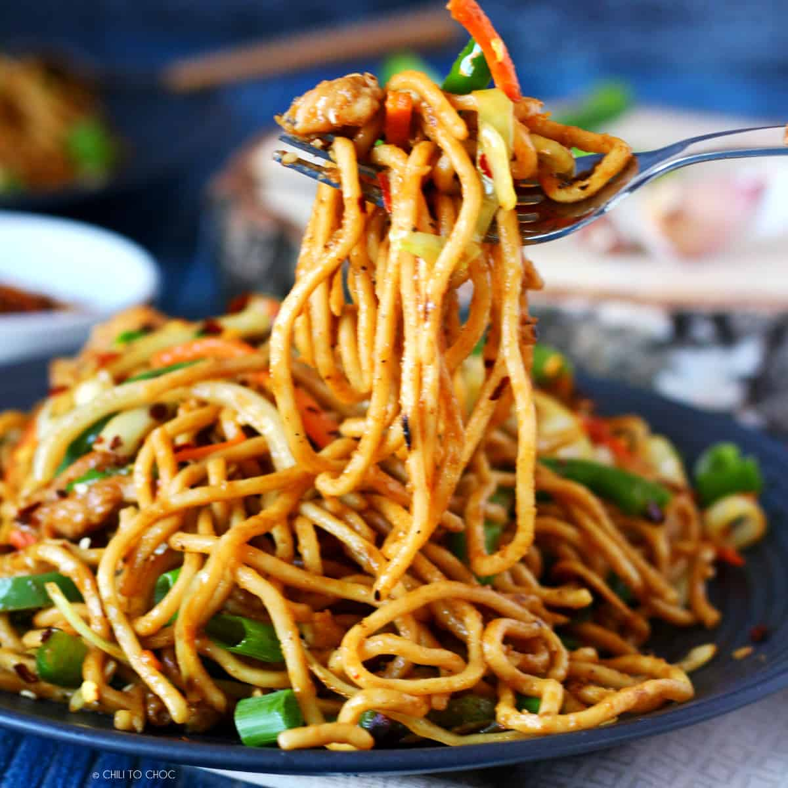

Chowmein
Chow mein (/ˈtʃaʊ ˈmeɪn/ and /ˈtʃaʊ ˈmiːn/, simplified Chinese: 炒面; traditional Chinese: 炒麵; Pinyin: chǎomiàn) are Chinese stir-fried noodles with vegetables and sometimes meat or tofu. The dish is popular throughout the Chinese diaspora and appears on the menus of most Chinese restaurants abroad.[1] It is particularly popular in India,[2] Nepal,[3] the UK,[4] and the US.[5]
prep time
30min.
cook time
15min.
servings
servings
Tags : Soups
Breakfast
Food
Beef
A.1 chicken breasts
B.400 gm hakka noodles
C.2 medium carrot
D.2 medium onion
E.5 green chilli
F.2 tablespoon soy sauce
G.salt as required
H.2 egg
I.1/3 cup cabbage
J.4 stalks spring onions
K.6 cloves garlic
L.1 inch ginger
M.black pepper as required
N.4 tablespoon virgin olive oil
Step 1-Cook the chicken breast
Make deep slits on the chicken breast. Marinate it with crushed garlic cloves, olive oil, black pepper powder, salt and soy sauce, and keep it aside for 30 minutes. Cook it until it is tender. Keep the leftover juices for later usage. When the chicken breast has cooled down, shred it into long thin strips.
Step 2-Cook eggs and julienne vegetables
In a bowl, add 2 eggs, 1 tbsp milk, salt and pepper to taste and whisk the mixture. Fry it on a pan like an omelette. Roll it up and julienne the omelette into thin slices. Julienne all the vegetables into thin strips as well.
Step 3-Stir fry the vegetables
First, slice the onion, ginger and green chilli and crush the whole garlic cloves with the skin on. Next, heat a frying pan and add a little oil. Stir fry the julienned vegetables and season with salt, pepper. Set it aside.
Meanwhile, boil water in a large pan and add salt and little oil to it. Add the packed noodles and cook them as per their detailed instructions. Strain the cooked noodles through a mesh sieve and put them under running water for a few minutes and set them aside. Add a few drops of oil to the noodles and give a toss so that they don’t stick together.
Step 5-Add noodles and vegetables to the pan
Now in a pan, heat oil and add the crushed garlic along with ginger, green chilli and onion we prepared in step 3. Saute them until they are soft and cooked. Add the leftover juice of chicken that we kept aside. Then add all the cooked vegetables, julienned egg and chicken. Give them a thorough stir. Then add noodles along with soy sauce and chopped spring onions. Mix them and check the seasoning.
Step 6-Ready to be served
Serve the chowmein with some sauce of your choice.